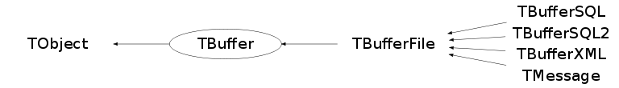

Function Members (Methods)
This is an abstract class, constructors will not be documented.
Look at the header to check for available constructors.
public:
| virtual | ~TBuffer() |
| void | TObject::AbstractMethod(const char* method) const |
| virtual void | TObject::AppendPad(Option_t* option = "") |
| virtual Int_t | ApplySequence(const TStreamerInfoActions::TActionSequence& sequence, void* object) |
| virtual Int_t | ApplySequence(const TStreamerInfoActions::TActionSequence& sequence, void* start_collection, void* end_collection) |
| virtual Int_t | ApplySequenceVecPtr(const TStreamerInfoActions::TActionSequence& sequence, void* start_collection, void* end_collection) |
| void | AutoExpand(Int_t size_needed) |
| virtual void | TObject::Browse(TBrowser* b) |
| char* | Buffer() const |
| Int_t | BufferSize() const |
| virtual Int_t | CheckByteCount(UInt_t startpos, UInt_t bcnt, const TClass* clss) |
| virtual Int_t | CheckByteCount(UInt_t startpos, UInt_t bcnt, const char* classname) |
| virtual Bool_t | CheckObject(const TObject* obj) |
| virtual Bool_t | CheckObject(const void* obj, const TClass* ptrClass) |
| static TClass* | Class() |
| virtual void | ClassBegin(const TClass*, Version_t = -1) |
| virtual void | ClassEnd(const TClass*) |
| virtual void | ClassMember(const char*, const char* = 0, Int_t = -1, Int_t = -1) |
| virtual const char* | TObject::ClassName() const |
| virtual void | TObject::Clear(Option_t* = "") |
| virtual TObject* | TObject::Clone(const char* newname = "") const |
| virtual Int_t | TObject::Compare(const TObject* obj) const |
| virtual void | TObject::Copy(TObject& object) const |
| virtual void | DecrementLevel(TVirtualStreamerInfo*) |
| virtual void | TObject::Delete(Option_t* option = "")MENU |
| void | DetachBuffer() |
| virtual Int_t | TObject::DistancetoPrimitive(Int_t px, Int_t py) |
| virtual void | TObject::Draw(Option_t* option = "") |
| virtual void | TObject::DrawClass() constMENU |
| virtual TObject* | TObject::DrawClone(Option_t* option = "") constMENU |
| virtual void | TObject::Dump() constMENU |
| virtual void | TObject::Error(const char* method, const char* msgfmt) const |
| virtual void | TObject::Execute(const char* method, const char* params, Int_t* error = 0) |
| virtual void | TObject::Execute(TMethod* method, TObjArray* params, Int_t* error = 0) |
| virtual void | TObject::ExecuteEvent(Int_t event, Int_t px, Int_t py) |
| void | Expand(Int_t newsize, Bool_t copy = kTRUE) |
| virtual void | TObject::Fatal(const char* method, const char* msgfmt) const |
| virtual TObject* | TObject::FindObject(const char* name) const |
| virtual TObject* | TObject::FindObject(const TObject* obj) const |
| virtual void | ForceWriteInfo(TVirtualStreamerInfo* info, Bool_t force) |
| virtual void | ForceWriteInfoClones(TClonesArray* a) |
| virtual Int_t | GetBufferDisplacement() const |
| Int_t | GetBufferVersion() const |
| static TClass* | GetClass(const type_info& typeinfo) |
| static TClass* | GetClass(const char* className) |
| virtual Option_t* | TObject::GetDrawOption() const |
| static Long_t | TObject::GetDtorOnly() |
| virtual const char* | TObject::GetIconName() const |
| virtual TVirtualStreamerInfo* | GetInfo() |
| virtual TProcessID* | GetLastProcessID(TRefTable* reftable) const |
| virtual Int_t | GetMapCount() const |
| virtual void | GetMappedObject(UInt_t tag, void*& ptr, TClass*& ClassPtr) const |
| virtual const char* | TObject::GetName() const |
| virtual char* | TObject::GetObjectInfo(Int_t px, Int_t py) const |
| static Bool_t | TObject::GetObjectStat() |
| virtual Option_t* | TObject::GetOption() const |
| TObject* | GetParent() const |
| virtual UShort_t | GetPidOffset() const |
| ReAllocCharFun_t | GetReAllocFunc() const |
| virtual const char* | TObject::GetTitle() const |
| virtual UInt_t | GetTRefExecId() |
| virtual UInt_t | TObject::GetUniqueID() const |
| virtual Int_t | GetVersionOwner() const |
| virtual Bool_t | TObject::HandleTimer(TTimer* timer) |
| virtual ULong_t | TObject::Hash() const |
| virtual void | IncrementLevel(TVirtualStreamerInfo* info) |
| virtual void | TObject::Info(const char* method, const char* msgfmt) const |
| virtual Bool_t | TObject::InheritsFrom(const char* classname) const |
| virtual Bool_t | TObject::InheritsFrom(const TClass* cl) const |
| virtual void | InitMap() |
| virtual void | TObject::Inspect() constMENU |
| void | TObject::InvertBit(UInt_t f) |
| virtual TClass* | IsA() const |
| virtual Bool_t | TObject::IsEqual(const TObject* obj) const |
| virtual Bool_t | TObject::IsFolder() const |
| Bool_t | TObject::IsOnHeap() const |
| Bool_t | IsReading() const |
| virtual Bool_t | TObject::IsSortable() const |
| Bool_t | IsWriting() const |
| Bool_t | TObject::IsZombie() const |
| Int_t | Length() const |
| virtual void | TObject::ls(Option_t* option = "") const |
| virtual void | MapObject(const TObject* obj, UInt_t offset = 1) |
| virtual void | MapObject(const void* obj, const TClass* cl, UInt_t offset = 1) |
| void | TObject::MayNotUse(const char* method) const |
| virtual Bool_t | TObject::Notify() |
| void | TObject::Obsolete(const char* method, const char* asOfVers, const char* removedFromVers) const |
| static void | TObject::operator delete(void* ptr) |
| static void | TObject::operator delete(void* ptr, void* vp) |
| static void | TObject::operator delete[](void* ptr) |
| static void | TObject::operator delete[](void* ptr, void* vp) |
| void* | TObject::operator new(size_t sz) |
| void* | TObject::operator new(size_t sz, void* vp) |
| void* | TObject::operator new[](size_t sz) |
| void* | TObject::operator new[](size_t sz, void* vp) |
| virtual void | TObject::Paint(Option_t* option = "") |
| virtual TVirtualArray* | PeekDataCache() const |
| virtual void | TObject::Pop() |
| virtual TVirtualArray* | PopDataCache() |
| virtual void | TObject::Print(Option_t* option = "") const |
| virtual void | PushDataCache(TVirtualArray*) |
| virtual Int_t | ReadArray(Bool_t*& b) |
| virtual Int_t | ReadArray(Char_t*& c) |
| virtual Int_t | ReadArray(UChar_t*& c) |
| virtual Int_t | ReadArray(Short_t*& h) |
| virtual Int_t | ReadArray(UShort_t*& h) |
| virtual Int_t | ReadArray(Int_t*& i) |
| virtual Int_t | ReadArray(UInt_t*& i) |
| virtual Int_t | ReadArray(Long_t*& l) |
| virtual Int_t | ReadArray(ULong_t*& l) |
| virtual Int_t | ReadArray(Long64_t*& l) |
| virtual Int_t | ReadArray(ULong64_t*& l) |
| virtual Int_t | ReadArray(Float_t*& f) |
| virtual Int_t | ReadArray(Double_t*& d) |
| virtual Int_t | ReadArrayDouble32(Double_t*& d, TStreamerElement* ele = 0) |
| virtual Int_t | ReadArrayFloat16(Float_t*& f, TStreamerElement* ele = 0) |
| virtual void | ReadBool(Bool_t& b) |
| virtual Int_t | ReadBuf(void* buf, Int_t max) |
| virtual void | ReadChar(Char_t& c) |
| virtual void | ReadCharP(Char_t* c) |
| virtual TClass* | ReadClass(const TClass* cl = 0, UInt_t* objTag = 0) |
| virtual Int_t | ReadClassBuffer(const TClass* cl, void* pointer, const TClass* onfile_class = 0) |
| virtual Int_t | ReadClassBuffer(const TClass* cl, void* pointer, Int_t version, UInt_t start, UInt_t count, const TClass* onfile_class = 0) |
| virtual Int_t | ReadClassEmulated(const TClass* cl, void* object, const TClass* onfile_class = 0) |
| virtual Int_t | ReadClones(TClonesArray* a, Int_t nobjects, Version_t objvers) |
| virtual void | ReadDouble(Double_t& d) |
| virtual void | ReadDouble32(Double_t* d, TStreamerElement* ele = 0) |
| virtual void | ReadFastArray(Bool_t* b, Int_t n) |
| virtual void | ReadFastArray(Char_t* c, Int_t n) |
| virtual void | ReadFastArray(UChar_t* c, Int_t n) |
| virtual void | ReadFastArray(Short_t* h, Int_t n) |
| virtual void | ReadFastArray(UShort_t* h, Int_t n) |
| virtual void | ReadFastArray(Int_t* i, Int_t n) |
| virtual void | ReadFastArray(UInt_t* i, Int_t n) |
| virtual void | ReadFastArray(Long_t* l, Int_t n) |
| virtual void | ReadFastArray(ULong_t* l, Int_t n) |
| virtual void | ReadFastArray(Long64_t* l, Int_t n) |
| virtual void | ReadFastArray(ULong64_t* l, Int_t n) |
| virtual void | ReadFastArray(Float_t* f, Int_t n) |
| virtual void | ReadFastArray(Double_t* d, Int_t n) |
| virtual void | ReadFastArray(void* start, const TClass* cl, Int_t n = 1, TMemberStreamer* s = 0, const TClass* onFileClass = 0) |
| virtual void | ReadFastArray(void** startp, const TClass* cl, Int_t n = 1, Bool_t isPreAlloc = kFALSE, TMemberStreamer* s = 0, const TClass* onFileClass = 0) |
| virtual void | ReadFastArrayDouble32(Double_t* d, Int_t n, TStreamerElement* ele = 0) |
| virtual void | ReadFastArrayFloat16(Float_t* f, Int_t n, TStreamerElement* ele = 0) |
| virtual void | ReadFastArrayString(Char_t* c, Int_t n) |
| virtual void | ReadFloat(Float_t& f) |
| virtual void | ReadFloat16(Float_t* f, TStreamerElement* ele = 0) |
| virtual void | ReadInt(Int_t& i) |
| virtual void | ReadLong(Long_t& l) |
| virtual void | ReadLong64(Long64_t& l) |
| virtual TObject* | ReadObject(const TClass* cl) |
| virtual void* | ReadObjectAny(const TClass* cast) |
| virtual TProcessID* | ReadProcessID(UShort_t pidf) |
| virtual void | ReadShort(Short_t& s) |
| virtual Int_t | ReadStaticArray(Bool_t* b) |
| virtual Int_t | ReadStaticArray(Char_t* c) |
| virtual Int_t | ReadStaticArray(UChar_t* c) |
| virtual Int_t | ReadStaticArray(Short_t* h) |
| virtual Int_t | ReadStaticArray(UShort_t* h) |
| virtual Int_t | ReadStaticArray(Int_t* i) |
| virtual Int_t | ReadStaticArray(UInt_t* i) |
| virtual Int_t | ReadStaticArray(Long_t* l) |
| virtual Int_t | ReadStaticArray(ULong_t* l) |
| virtual Int_t | ReadStaticArray(Long64_t* l) |
| virtual Int_t | ReadStaticArray(ULong64_t* l) |
| virtual Int_t | ReadStaticArray(Float_t* f) |
| virtual Int_t | ReadStaticArray(Double_t* d) |
| virtual Int_t | ReadStaticArrayDouble32(Double_t* d, TStreamerElement* ele = 0) |
| virtual Int_t | ReadStaticArrayFloat16(Float_t* f, TStreamerElement* ele = 0) |
| virtual char* | ReadString(char* s, Int_t max) |
| virtual void | ReadTString(TString& s) |
| virtual void | ReadUChar(UChar_t& c) |
| virtual void | ReadUInt(UInt_t& i) |
| virtual void | ReadULong(ULong_t& l) |
| virtual void | ReadULong64(ULong64_t& l) |
| virtual void | ReadUShort(UShort_t& s) |
| virtual Version_t | ReadVersion(UInt_t* start = 0, UInt_t* bcnt = 0, const TClass* cl = 0) |
| virtual Version_t | ReadVersionForMemberWise(const TClass* cl = 0) |
| virtual void | ReadWithFactor(Float_t* ptr, Double_t factor, Double_t minvalue) |
| virtual void | ReadWithFactor(Double_t* ptr, Double_t factor, Double_t minvalue) |
| virtual void | ReadWithNbits(Float_t* ptr, Int_t nbits) |
| virtual void | ReadWithNbits(Double_t* ptr, Int_t nbits) |
| virtual void | TObject::RecursiveRemove(TObject* obj) |
| virtual void | Reset() |
| void | TObject::ResetBit(UInt_t f) |
| virtual void | ResetMap() |
| virtual void | TObject::SaveAs(const char* filename = "", Option_t* option = "") constMENU |
| virtual void | TObject::SavePrimitive(ostream& out, Option_t* option = "") |
| void | TObject::SetBit(UInt_t f) |
| void | TObject::SetBit(UInt_t f, Bool_t set) |
| void | SetBuffer(void* buf, UInt_t bufsiz = 0, Bool_t adopt = kTRUE, ReAllocCharFun_t reallocfunc = 0) |
| virtual void | SetBufferDisplacement() |
| virtual void | SetBufferDisplacement(Int_t skipped) |
| void | SetBufferOffset(Int_t offset = 0) |
| virtual void | SetByteCount(UInt_t cntpos, Bool_t packInVersion = kFALSE) |
| virtual void | TObject::SetDrawOption(Option_t* option = "")MENU |
| static void | TObject::SetDtorOnly(void* obj) |
| static void | TObject::SetObjectStat(Bool_t stat) |
| void | SetParent(TObject* parent) |
| virtual void | SetPidOffset(UShort_t offset) |
| void | SetReadMode() |
| virtual void | SetReadParam(Int_t mapsize) |
| void | SetReAllocFunc(ReAllocCharFun_t reallocfunc = 0) |
| virtual void | SetStreamerElementNumber(Int_t) |
| virtual void | TObject::SetUniqueID(UInt_t uid) |
| void | SetWriteMode() |
| virtual void | SetWriteParam(Int_t mapsize) |
| virtual void | ShowMembers(TMemberInspector& insp) |
| virtual void | SkipObjectAny() |
| virtual void | SkipVersion(const TClass* cl = 0) |
| virtual void | Streamer(TBuffer& b) |
| void | StreamerNVirtual(TBuffer& b) |
| virtual void | StreamObject(TObject* obj) |
| virtual void | StreamObject(void* obj, const type_info& typeinfo, const TClass* onFileClass = 0) |
| virtual void | StreamObject(void* obj, const char* className, const TClass* onFileClass = 0) |
| virtual void | StreamObject(void* obj, const TClass* cl, const TClass* onFileClass = 0) |
| virtual void | TObject::SysError(const char* method, const char* msgfmt) const |
| virtual void | TagStreamerInfo(TVirtualStreamerInfo* info) |
| Bool_t | TObject::TestBit(UInt_t f) const |
| Int_t | TObject::TestBits(UInt_t f) const |
| virtual void | TObject::UseCurrentStyle() |
| virtual void | TObject::Warning(const char* method, const char* msgfmt) const |
| virtual void | WriteArray(const Bool_t* b, Int_t n) |
| virtual void | WriteArray(const Char_t* c, Int_t n) |
| virtual void | WriteArray(const UChar_t* c, Int_t n) |
| virtual void | WriteArray(const Short_t* h, Int_t n) |
| virtual void | WriteArray(const UShort_t* h, Int_t n) |
| virtual void | WriteArray(const Int_t* i, Int_t n) |
| virtual void | WriteArray(const UInt_t* i, Int_t n) |
| virtual void | WriteArray(const Long_t* l, Int_t n) |
| virtual void | WriteArray(const ULong_t* l, Int_t n) |
| virtual void | WriteArray(const Long64_t* l, Int_t n) |
| virtual void | WriteArray(const ULong64_t* l, Int_t n) |
| virtual void | WriteArray(const Float_t* f, Int_t n) |
| virtual void | WriteArray(const Double_t* d, Int_t n) |
| virtual void | WriteArrayDouble32(const Double_t* d, Int_t n, TStreamerElement* ele = 0) |
| virtual void | WriteArrayFloat16(const Float_t* f, Int_t n, TStreamerElement* ele = 0) |
| virtual void | WriteBool(Bool_t b) |
| virtual void | WriteBuf(const void* buf, Int_t max) |
| virtual void | WriteChar(Char_t c) |
| virtual void | WriteCharP(const Char_t* c) |
| virtual void | WriteClass(const TClass* cl) |
| virtual Int_t | WriteClassBuffer(const TClass* cl, void* pointer) |
| virtual Int_t | WriteClones(TClonesArray* a, Int_t nobjects) |
| virtual void | WriteDouble(Double_t d) |
| virtual void | WriteDouble32(Double_t* d, TStreamerElement* ele = 0) |
| virtual void | WriteFastArray(const Bool_t* b, Int_t n) |
| virtual void | WriteFastArray(const Char_t* c, Int_t n) |
| virtual void | WriteFastArray(const UChar_t* c, Int_t n) |
| virtual void | WriteFastArray(const Short_t* h, Int_t n) |
| virtual void | WriteFastArray(const UShort_t* h, Int_t n) |
| virtual void | WriteFastArray(const Int_t* i, Int_t n) |
| virtual void | WriteFastArray(const UInt_t* i, Int_t n) |
| virtual void | WriteFastArray(const Long_t* l, Int_t n) |
| virtual void | WriteFastArray(const ULong_t* l, Int_t n) |
| virtual void | WriteFastArray(const Long64_t* l, Int_t n) |
| virtual void | WriteFastArray(const ULong64_t* l, Int_t n) |
| virtual void | WriteFastArray(const Float_t* f, Int_t n) |
| virtual void | WriteFastArray(const Double_t* d, Int_t n) |
| virtual void | WriteFastArray(void* start, const TClass* cl, Int_t n = 1, TMemberStreamer* s = 0) |
| virtual Int_t | WriteFastArray(void** startp, const TClass* cl, Int_t n = 1, Bool_t isPreAlloc = kFALSE, TMemberStreamer* s = 0) |
| virtual void | WriteFastArrayDouble32(const Double_t* d, Int_t n, TStreamerElement* ele = 0) |
| virtual void | WriteFastArrayFloat16(const Float_t* f, Int_t n, TStreamerElement* ele = 0) |
| virtual void | WriteFastArrayString(const Char_t* c, Int_t n) |
| virtual void | WriteFloat(Float_t f) |
| virtual void | WriteFloat16(Float_t* f, TStreamerElement* ele = 0) |
| virtual void | WriteInt(Int_t i) |
| virtual void | WriteLong(Long_t l) |
| virtual void | WriteLong64(Long64_t l) |
| virtual void | WriteObject(const TObject* obj) |
| virtual Int_t | WriteObjectAny(const void* obj, const TClass* ptrClass) |
| virtual UShort_t | WriteProcessID(TProcessID* pid) |
| virtual void | WriteShort(Short_t s) |
| virtual void | WriteString(const char* s) |
| virtual void | WriteTString(const TString& s) |
| virtual void | WriteUChar(UChar_t c) |
| virtual void | WriteUInt(UInt_t i) |
| virtual void | WriteULong(ULong_t l) |
| virtual void | WriteULong64(ULong64_t l) |
| virtual void | WriteUShort(UShort_t s) |
| virtual UInt_t | WriteVersion(const TClass* cl, Bool_t useBcnt = kFALSE) |
| virtual UInt_t | WriteVersionMemberWise(const TClass* cl, Bool_t useBcnt = kFALSE) |
protected:
| virtual void | TObject::DoError(int level, const char* location, const char* fmt, va_list va) const |
| void | TObject::MakeZombie() |
| void | operator=(const TBuffer&) |
| virtual Int_t | Read(const char* name) |
| virtual Int_t | Write(const char* name, Int_t opt, Int_t bufs) |
| virtual Int_t | Write(const char* name, Int_t opt, Int_t bufs) const |
Data Members
public:
| enum EMode { | kRead | |
| kWrite | ||
| }; | ||
| enum { | kIsOwner | |
| kCannotHandleMemberWiseStreaming | ||
| kInitialSize | ||
| kMinimalSize | ||
| }; | ||
| enum TObject::EStatusBits { | kCanDelete | |
| kMustCleanup | ||
| kObjInCanvas | ||
| kIsReferenced | ||
| kHasUUID | ||
| kCannotPick | ||
| kNoContextMenu | ||
| kInvalidObject | ||
| }; | ||
| enum TObject::[unnamed] { | kIsOnHeap | |
| kNotDeleted | ||
| kZombie | ||
| kBitMask | ||
| kSingleKey | ||
| kOverwrite | ||
| kWriteDelete | ||
| }; |
protected:
| char* | fBufCur | Current position in buffer |
| char* | fBufMax | End of buffer |
| Int_t | fBufSize | Size of buffer |
| char* | fBuffer | Buffer used to store objects |
| vector<TVirtualArray*> | fCacheStack | Stack of pointers to the cache where to temporarily store the value of 'missing' data members |
| Bool_t | fMode | Read or write mode |
| TObject* | fParent | Pointer to parent object owning this buffer |
| ReAllocCharFun_t | fReAllocFunc | ! Realloc function to be used when extending the buffer. |
| Int_t | fVersion | Buffer format version |
Class Charts
{kind=link}
{kind=link}
{kind=link}
{kind=link}

Function documentation
void AutoExpand(Int_t size_needed)
Automatically calculate a new size and expand the buffer to fit at least size_needed. The goals is to minimize the number of memory allocation and the memory allocation which avoiding too much memory wastage. If the size_needed is larger than the current size, the policy is to expand to double the current size or the size_needed which ever is largest.
void SetBuffer(void* buf, UInt_t bufsiz = 0, Bool_t adopt = kTRUE, ReAllocCharFun_t reallocfunc = 0)
Sets a new buffer in an existing TBuffer object. If newsiz=0 then the new buffer is expected to have the same size as the previous buffer. The current buffer position is reset to the start of the buffer. If the TBuffer owned the previous buffer, it will be deleted prior to accepting the new buffer. By default the new buffer will be adopted unless adopt is false. If the new buffer is _not_ adopted and no memory allocation routine is provided, a Fatal error will be issued if the Buffer attempts to expand.
void SetReAllocFunc(ReAllocCharFun_t reallocfunc = 0)
void PushDataCache(TVirtualArray* )
Push a new data cache area onto the list of area to be used for temporarily store 'missing' data members.
TVirtualArray * PeekDataCache() const
Return the 'current' data cache area from the list of area to be used for temporarily store 'missing' data members.
TVirtualArray * PopDataCache()
Pop and Return the 'current' data cache area from the list of area to be used for temporarily store 'missing' data members.
Bool_t CheckObject(const TObject* obj)
Bool_t CheckObject(const void* obj, const TClass* ptrClass)
char * ReadString(char* s, Int_t max)
void WriteString(const char* s)
Int_t GetVersionOwner() const
Int_t GetMapCount() const
void GetMappedObject(UInt_t tag, void*& ptr, TClass*& ClassPtr) const
void Reset()
void InitMap()
void ResetMap()
void SetReadParam(Int_t mapsize)
void SetWriteParam(Int_t mapsize)
Int_t CheckByteCount(UInt_t startpos, UInt_t bcnt, const TClass* clss)
Int_t CheckByteCount(UInt_t startpos, UInt_t bcnt, const char* classname)
void SetByteCount(UInt_t cntpos, Bool_t packInVersion = kFALSE)
void SkipVersion(const TClass* cl = 0)
Version_t ReadVersion(UInt_t* start = 0, UInt_t* bcnt = 0, const TClass* cl = 0)
Version_t ReadVersionForMemberWise(const TClass* cl = 0)
UInt_t WriteVersion(const TClass* cl, Bool_t useBcnt = kFALSE)
UInt_t WriteVersionMemberWise(const TClass* cl, Bool_t useBcnt = kFALSE)
void * ReadObjectAny(const TClass* cast)
void SkipObjectAny()
void TagStreamerInfo(TVirtualStreamerInfo* info)
void IncrementLevel(TVirtualStreamerInfo* info)
void SetStreamerElementNumber(Int_t )
void DecrementLevel(TVirtualStreamerInfo* )
void ClassBegin(const TClass* , Version_t = -1)
void ClassMember(const char* , const char* = 0, Int_t = -1, Int_t = -1)
void WriteClass(const TClass* cl)
TObject * ReadObject(const TClass* cl)
void WriteObject(const TObject* obj)
Int_t WriteObjectAny(const void* obj, const TClass* ptrClass)
UShort_t GetPidOffset() const
void SetPidOffset(UShort_t offset)
Int_t GetBufferDisplacement() const
void SetBufferDisplacement()
void SetBufferDisplacement(Int_t skipped)
void WriteFloat16(Float_t* f, TStreamerElement* ele = 0)
void ReadDouble32(Double_t* d, TStreamerElement* ele = 0)
void WriteDouble32(Double_t* d, TStreamerElement* ele = 0)
void ReadWithFactor(Float_t* ptr, Double_t factor, Double_t minvalue)
void ReadWithNbits(Float_t* ptr, Int_t nbits)
void ReadWithFactor(Double_t* ptr, Double_t factor, Double_t minvalue)
void ReadWithNbits(Double_t* ptr, Int_t nbits)
Int_t ReadArrayFloat16(Float_t*& f, TStreamerElement* ele = 0)
Int_t ReadArrayDouble32(Double_t*& d, TStreamerElement* ele = 0)
Int_t ReadStaticArrayFloat16(Float_t* f, TStreamerElement* ele = 0)
Int_t ReadStaticArrayDouble32(Double_t* d, TStreamerElement* ele = 0)
void ReadFastArray(Bool_t* b, Int_t n)
void ReadFastArray(Char_t* c, Int_t n)
void ReadFastArrayString(Char_t* c, Int_t n)
void ReadFastArray(UChar_t* c, Int_t n)
void ReadFastArray(Short_t* h, Int_t n)
void ReadFastArray(UShort_t* h, Int_t n)
void ReadFastArray(Int_t* i, Int_t n)
void ReadFastArray(UInt_t* i, Int_t n)
void ReadFastArray(Long_t* l, Int_t n)
void ReadFastArray(ULong_t* l, Int_t n)
void ReadFastArray(Long64_t* l, Int_t n)
void ReadFastArray(ULong64_t* l, Int_t n)
void ReadFastArray(Float_t* f, Int_t n)
void ReadFastArray(Double_t* d, Int_t n)
void ReadFastArrayFloat16(Float_t* f, Int_t n, TStreamerElement* ele = 0)
void ReadFastArrayDouble32(Double_t* d, Int_t n, TStreamerElement* ele = 0)
void ReadFastArray(void* start, const TClass* cl, Int_t n = 1, TMemberStreamer* s = 0, const TClass* onFileClass = 0)
void ReadFastArray(void** startp, const TClass* cl, Int_t n = 1, Bool_t isPreAlloc = kFALSE, TMemberStreamer* s = 0, const TClass* onFileClass = 0)
void WriteArray(const Bool_t* b, Int_t n)
void WriteArray(const Char_t* c, Int_t n)
void WriteArray(const UChar_t* c, Int_t n)
void WriteArray(const Short_t* h, Int_t n)
void WriteArray(const UShort_t* h, Int_t n)
void WriteArray(const Int_t* i, Int_t n)
void WriteArray(const UInt_t* i, Int_t n)
void WriteArray(const Long_t* l, Int_t n)
void WriteArray(const ULong_t* l, Int_t n)
void WriteArray(const Long64_t* l, Int_t n)
void WriteArray(const ULong64_t* l, Int_t n)
void WriteArray(const Float_t* f, Int_t n)
void WriteArray(const Double_t* d, Int_t n)
void WriteArrayFloat16(const Float_t* f, Int_t n, TStreamerElement* ele = 0)
void WriteArrayDouble32(const Double_t* d, Int_t n, TStreamerElement* ele = 0)
void WriteFastArray(const Bool_t* b, Int_t n)
void WriteFastArray(const Char_t* c, Int_t n)
void WriteFastArrayString(const Char_t* c, Int_t n)
void WriteFastArray(const UChar_t* c, Int_t n)
void WriteFastArray(const Short_t* h, Int_t n)
void WriteFastArray(const UShort_t* h, Int_t n)
void WriteFastArray(const Int_t* i, Int_t n)
void WriteFastArray(const UInt_t* i, Int_t n)
void WriteFastArray(const Long_t* l, Int_t n)
void WriteFastArray(const ULong_t* l, Int_t n)
void WriteFastArray(const Long64_t* l, Int_t n)
void WriteFastArray(const ULong64_t* l, Int_t n)
void WriteFastArray(const Float_t* f, Int_t n)
void WriteFastArray(const Double_t* d, Int_t n)
void WriteFastArrayFloat16(const Float_t* f, Int_t n, TStreamerElement* ele = 0)
void WriteFastArrayDouble32(const Double_t* d, Int_t n, TStreamerElement* ele = 0)
void WriteFastArray(void* start, const TClass* cl, Int_t n = 1, TMemberStreamer* s = 0)
Int_t WriteFastArray(void** startp, const TClass* cl, Int_t n = 1, Bool_t isPreAlloc = kFALSE, TMemberStreamer* s = 0)
void StreamObject(void* obj, const type_info& typeinfo, const TClass* onFileClass = 0)
void StreamObject(void* obj, const char* className, const TClass* onFileClass = 0)
void StreamObject(void* obj, const TClass* cl, const TClass* onFileClass = 0)
void StreamObject(TObject* obj)
void ReadUShort(UShort_t& s)
void ReadLong64(Long64_t& l)
void ReadULong64(ULong64_t& l)
void ReadDouble(Double_t& d)
void ReadTString(TString& s)
void WriteUChar(UChar_t c)
void WriteShort(Short_t s)
void WriteUShort(UShort_t s)
void WriteULong(ULong_t l)
void WriteLong64(Long64_t l)
void WriteULong64(ULong64_t l)
void WriteFloat(Float_t f)
void WriteDouble(Double_t d)
void WriteCharP(const Char_t* c)
void WriteTString(const TString& s)
void ForceWriteInfoClones(TClonesArray* a)
Int_t ReadClones(TClonesArray* a, Int_t nobjects, Version_t objvers)
Int_t WriteClones(TClonesArray* a, Int_t nobjects)
Int_t ReadClassEmulated(const TClass* cl, void* object, const TClass* onfile_class = 0)
Utilities for TClass
Int_t ReadClassBuffer(const TClass* cl, void* pointer, const TClass* onfile_class = 0)
Int_t ReadClassBuffer(const TClass* cl, void* pointer, Int_t version, UInt_t start, UInt_t count, const TClass* onfile_class = 0)
Int_t WriteClassBuffer(const TClass* cl, void* pointer)
Int_t ApplySequence(const TStreamerInfoActions::TActionSequence& sequence, void* object)
Utilites to streamer using sequences.
Int_t ApplySequenceVecPtr(const TStreamerInfoActions::TActionSequence& sequence, void* start_collection, void* end_collection)
Int_t ApplySequence(const TStreamerInfoActions::TActionSequence& sequence, void* start_collection, void* end_collection)